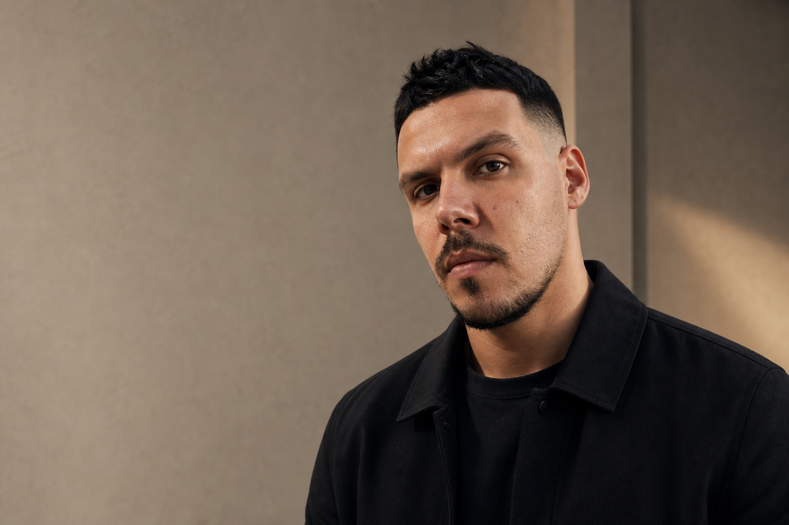

Founder / Real Estate / GTM / Product Strategy
I turn complex markets into revenue systems.
Bring me in when the opportunity is valuable but still unshaped: a property business, an investor story, a sales funnel, a partnership format, a product mechanic, or an internal tool that has to make the company faster.

ARTEM GRINBERG
What becomes easier when I join the room
You get a founder-level operator who can read the market, shape the offer, build trust, coordinate people, sell the first movement, and stay close enough to the work until the system actually runs. I do not separate strategy from delivery: the point of the strategy is to make action easier, faster and commercially sharper.
BRE.GE and real estate management
Built a Batumi property and lifestyle business without external funding: sales, owner relations, apartment management, content, local partners and a self-built financial admin for rental income, expenses and balances.
Commercial development from land to tenants
Found land, brought investor capital, structured partnerships, managed contractors, handled documentation, solved ownership and auction mechanics, and turned buildings into income-producing assets with tenants.
Cadillac, FIFA, SPIEF, Wargaming
Managed launch mechanics, event operations, sponsor zones, logistics, production, staffing, creative adaptations and VIP-level execution where details, timing and reputation were the product.
Locastor, macro indicators, IEEE
Built a research-product logic around consumer behavior in retail, connected it to macroeconomic thinking and business informatics, and developed it into academic work with an IEEE publication.
Agency work and SaaS concepts
Ran digital projects for education, media and consulting clients, including Helen Doron, Varlamov and Malakut pages, then explored Fora: a collaboration layer for visual feedback on any website.
Academic foundation
Management, economics and business informatics shaped through competitive academic tracks and applied digital work.
- Saint Petersburg State University of Economics: bachelor's degree in management.
- MSU Faculty of Economics: graduate-level economics track entered through a competitive grant after a multi-stage selection process.
- HSE: completed master's degree in business informatics, e-business track.
- Wharton Customer Analytics plus e-commerce and project-management certifications.
Skills from the field
What I can actually do
My value is not a single function. I connect market reading, sales, product thinking, investor logic and hands-on execution until an opportunity becomes a working system. I am based between Tel Aviv and Georgia, mobile by default and ready for business trips, launches, investor meetings and on-site work.
Market strategy
Real estate operations
Investor storytelling
Sales systems
GTM mechanics
Partnerships
Project management
Financial admin logic
Product research
Customer analytics
Event operations
Digital production
I can find an opportunity, test if it has money behind it, make the offer believable, and sell the first version before the process becomes heavy.
I can coordinate people who do not naturally speak the same language: investors, contractors, designers, developers, landlords, tenants, clients and local partners.
I can move between boardroom logic and ground-level delivery: documents, sales calls, spreadsheets, content, operations, launches and uncomfortable details.
Selected projects
Different markets. Same useful pattern: find the signal, make it sell, execute.
01 / Current founder case
BRE.GE
I built BRE.GE as a Batumi real estate and lifestyle brand for international buyers. The business started without external funding and grew through direct trust, clear explanation, local execution and hands-on sales. Today it combines property selection, buyer guidance, apartment management, content, and internal finance automation for owner balances, rental income and expenses.
This is the clearest proof that I can create commercial value without a large structure around me: find the demand, build the offer, close transactions, and turn the work into a repeatable operating system.
Open BRE.GE
02 / Real estate development
Commercial development
I originated commercial real estate projects from zero: found land, recognized the business case, brought in investor capital, structured the partnership, managed contractors and documentation, and then found tenants so the asset could produce income. Total developed commercial property: 1,550 m².
The important part is not only construction. It is the full chain: opportunity, capital, land mechanics, permissions, execution, tenants and cash flow.
03 / Launch mechanic
Cadillac Take Away Drive
I created a product-like launch mechanic for Cadillac: a premium test drive from home to work, ordered through a digital flow and experienced as part of a real city route. It was sold to the brand for a model launch and turned a standard test-drive format into a story people wanted to talk about.
Result: 120 test drives, 500+ media mentions, 6x lower acquisition cost and a POPAI silver award for shopper marketing strategy.
Recognized at the international POPAI Awards as a shopper marketing case.
04 / Research product
Locastor
Locastor was a research-product concept for measuring consumer behavior inside a retail space. It connected macroeconomic thinking, shopper marketing and business informatics, and became the basis for my master's research and an IEEE publication.
It trained the part of my thinking I still use: observe small behavior patterns, extract the signal, and build a useful business model around it.
05 / SaaS concept
Fora
Fora was a SaaS concept for design and development teams: visual comments and stickers on any website, not only inside Figma or another closed workspace. The idea was to bring feedback closer to the actual surface of work and reduce the friction between designers, developers and stakeholders.
06 / Early operator case
Digital agency work
Before the larger real estate and brand projects, I built and managed digital work end-to-end: client conversations, offer logic, copy, design direction, production and delivery. The projects ranged from education to media and consulting.
The names were not always global brands, but the training was important: learning how to turn vague client requests into working pages, campaigns and commercial arguments.
07 / Operations at scale
FIFA / SPIEF / Wargaming
I worked inside large public environments where details matter: logistics, accreditation, partner zones, staffing, production, sponsor service, creative adaptations and on-site coordination. These projects trained speed, calm execution and the ability to keep many moving parts aligned under pressure.
Why this is valuable
Many people can make strategy decks. Many can sell. Many can manage tasks. The value is in combining all three while staying close to reality: seeing the market clearly, making the offer believable, closing the first movement, and building the operating logic behind it.